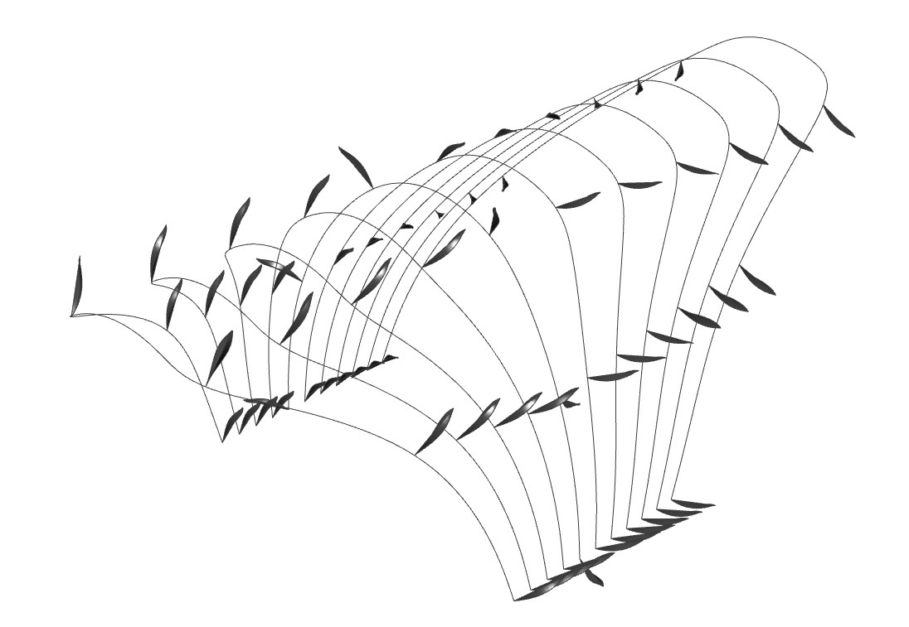
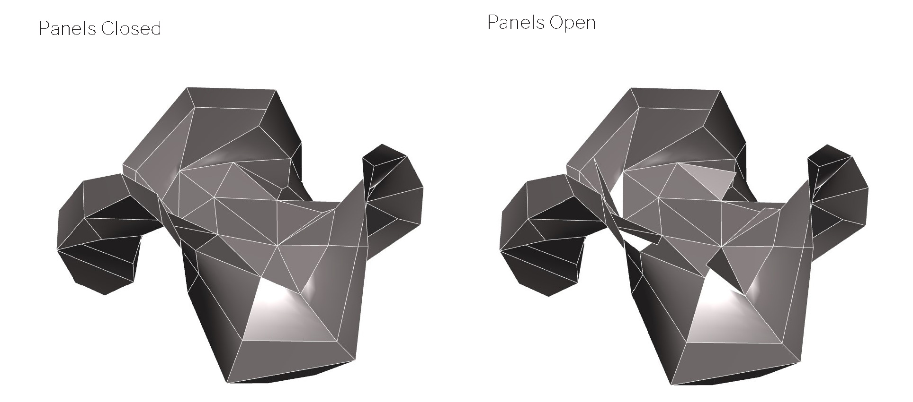

A design exploration and analysis of bio-inspired responsive pavilions.
BRIEF:
In teams, undertake an iterative design process to create a pavilion inspired by nature. The structure must respond to its environment and have a movement mechanism. Analyse and optimise the structure throughout the design process.
16 August 2020 UNSW Computational Design Studio
RETURN BRIEF
The pavilion must provide a comfortable space for a maximum of 4 performers. The design must obtain maximum acoustic projection with minimum sound absorbency. Components of the pavilion must be kinetically responsive to environmental factors, taking inspiration from a biological role model. We aim to create a comfortable level of shading and sunlight. The pavilion will be oriented for comfortable sunlight levels and to maximise foot traffic.
MY ROLE
For the first part of the design process I undertook the Site, Solar Path, Sunlight hours and Shading analysis. For the second section I did the Structural design and analysis, and the sunlight analysis’ once again. For these tasks I used the Grasshopper plugins Ladybug, Galapogas, and Karamba.
BIOLOGICAL ROLE MODEL
We chose to take inspiration from the Maranta Prayer Plant. This role model has a simple hinge kinetic movement, making it easy to design and build. The folding allows for shading and sunlight control. The movement is not shape specific which allows for a range in design choices.
SITE ANALYSIS
The allocated site of the pavilion is the Sydney Opera House Forecourt. From initial site analysis from the Internet and visiting the site I found that the space is very flat and exposed to the elements. There is a lot of sun exposure, especially during summer (Dec-Feb). There is almost always a breeze since it is located on the waterfront. These two aspects are something our group has to consider moving forward. The sunlight and shading analysis' also reflect this.
Average Temperatures and Precipitation
Wind Speed
ITERATION 1.1
This is the very first design we analysed (below). The small leaves and thin structure left the space very exposed to sunlight. You can see to the right, there was very minimal shade resulting from this design. Thus, for the following iterations, we need to reduce the sun exSposure by increasing the surface area of the shading system.

ITERATION 1.2
I increased the size and amount of leaves on the structure, thinking that this would increase shade. I also optimised the rotation of the leaves with Galapogas to reduce the radiation. However, there is only a small differnece in radiation and shade from the previous iteration.
ITERATION 2.1
Other team members had similar struggles with the thin frame of the previous design. So we decided to rethink the structure and change to a Enneper shape. As you can see to the right, there is significantly more shade and less radiation.
ITERATION 3.1
With the previous design, analysis was taking too long since it had many panels. So we optimised the structure based on sunlight hours, to decrease the number of panels. I then did a Radiation Analysis on the structure, when open and closed. As you can see to the right, there was a very slight difference between the 2 models. However, there is slightly more radiation in this model than the previous iteration.

STRUCTURAL DESIGN
To inform my design of the structure, I first did a karamba BESO analysis on the lines of the existing structure. From this I realised that less structural support is needed in the center of the roof and more support is needed along the edges of the structure. You can see this result in the iterations below. I will use this analysis to inform further iterations of the structure. As you can see the karamba analysis resulted in a very low utilisation. Therefore, all of these beams are not nessecary in ensuring the structural integrity of the pavilion.
The next step was to decide how the structure would interact with the existing panels. The first option was to have a substructure or skeleton structure underneath the panels. The other option was to have a structure which the panels sit within like a frame. I chose to continue with a frame structure as this has more structural support, mechanisms and wires can be more easily hidden within the framing, and our group agreed that it was more aesthetically appealing. As you can see below, I modeled this structure using our shape. I kept the sections around the edges of the shape solid to provide more structural support as per my karamba analysis.
SUNLIGHT ANALYSIS
After adding the moving mechanism to the revised structure, I undertook some sunlight analysis. As you can see below, I did a sunlight hours analysis when the panels were open and closed on June 21 and December 21. This is so that I could understand the range of sunlight hours influenced by our pavilion. In winter there was an average of 7 hr 53 min when panels were open and 7 hr 49 min when closed. In summer there was an average of 13 hr 54 min when panels were open and 13 hr 47 min when closed. This information can help inform the movement of the panels, as we want less sunlight hours in summer and more in winter to create a comfortable space all year round.
MOVEMENT BEHAVIOUR
Using the “Galapagos” plug-in in grasshopper, I optimised the rotation of the panels to achieve the desired number of sunlight hours. I decided to achieve the minimum amount of sunlight in summer and the maximum amount in winter to ensure a comfortable space all year round. This analysis will define the behavior of the panels and how they will respond to environmental data. As you can see to the right, the panels will open to a maximum of 90 ° in winter to receive the most sunlight hours. In summer, the panels will only open to 73 ° to minimise the sunlight hours. The panels will open and close throughout the day, responding to live weather data to ensure optimal comfort of the performers and other users.
DETAIL DESIGN
Through the design process, we wanted to ensure the pavilion fits into its surroundings. Therefore, we wanted to match the Opera House’s minimal, light aesthetic. Because of this we kept to light colouring for the materials. The framing and panels on the edges are made out of recycled timber, to minimise expenses and reduce the environmental impact. The panels are made from PVC with a UV layer to ensure sun safety within the pavilion. The mechanism itself is quite simple, using hinges and a pulley system with an arduino. This means that it would be fairly cheap to construct and maintain.
DESIGN FUTURE
From this project, I have learnt so many valuable skills that I can bring with me into a design career. I developed my skills in Grasshopper and Rhino, specifically in analysing environmental data. I also learnt how to visualise and optimise the design based on this analysis. Another skill I have developed is my ability to work in a team without seeing each other face to face. At first I struggled to communicate my design ideas and concerns, however through each task I became more comfortable with the online setting. I have learnt to also consider construction and how forms will be constructed and put together.